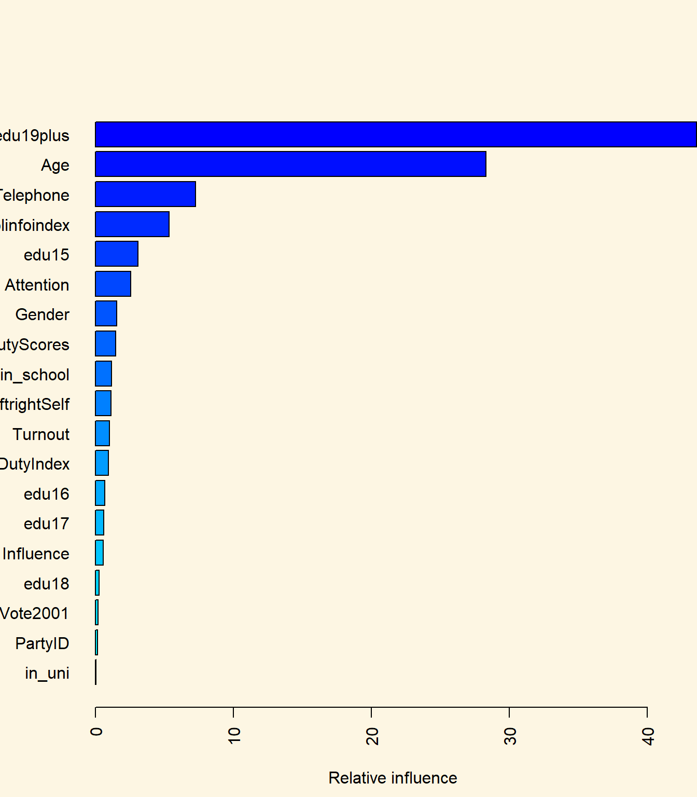

Chapter 7 Tree Based Models
7.1 Seminar
Tree models are non-parametric models. Depending on the data generation process, these models can be better predictive models than generalised linear models even with regularisation. We will start with the highly variable simple tree, followed by pruning, the random forrest model and boosting machines.
We load post-election survey data from the 2004 British Election Survey. The data is available here.
# clear workspace
rm(list=ls())
# needed because .dta is a foreign file format (STATA format)
library(readstata13)
bes <- read.dta13("bes.dta")
# drop missing values
bes <- na.omit(bes)
# drop id variable
bes$cs_id <- NULLWe clean the in_school variable which should be binary indicating whether a respondent is attending school or not. However, we estimated missing values (which is a superior treatment of missing values than list-wise deletion) and forgot classify those predictions into 0s and 1s.
-0.405100243979883 -0.286622836951644 -0.0932005119161492
1 1 1
-0.08278915151733 0 0.0403350016659423
1 4120 1
0.123419680101826 0.247478125358543 1
1 1 34 We use the ifelse() function to classify into 0 and 1.
0 1
4127 34 Next, we declare the categorical variables in the dataset to be factors en bulk.
# data manipulation
categcorical <- c("Turnout", "Vote2001", "Gender", "PartyID", "Telephone", "edu15",
"edu16", "edu17", "edu18", "edu19plus", "in_school", "in_uni")
# declare factor variables
bes[, categcorical] <- lapply(bes[, categcorical], factor)7.1.1 Classification Trees
We use trees to classifyrespondents into voters and non-voters. Here we need the tree package which we have to install if is not already install.packages("tree").
library(tree)
# build classification tree (- in formula language means except)
t1 <- tree( Turnout ~ . -CivicDutyScores, data = bes)
summary(t1)
Classification tree:
tree(formula = Turnout ~ . - CivicDutyScores, data = bes)
Variables actually used in tree construction:
[1] "CivicDutyIndex" "Vote2001" "polinfoindex"
Number of terminal nodes: 6
Residual mean deviance: 0.8434 = 3504 / 4155
Misclassification error rate: 0.1769 = 736 / 4161 We can plot the tree using the standard plot function. On every split a condition is printed. The observations in the left branch are those for which the condition is true and the ones on the right are those for which the condition is false.
We can also examine the splits as text.
node), split, n, deviance, yval, (yprob)
* denotes terminal node
1) root 4161 4763.0 1 ( 0.25931 0.74069 )
2) CivicDutyIndex < 19.5 3066 2446.0 1 ( 0.13666 0.86334 )
4) Vote2001: 0 243 333.4 1 ( 0.44033 0.55967 ) *
5) Vote2001: 1 2823 1963.0 1 ( 0.11052 0.88948 )
10) CivicDutyIndex < 16.5 1748 950.8 1 ( 0.07723 0.92277 ) *
11) CivicDutyIndex > 16.5 1075 961.7 1 ( 0.16465 0.83535 ) *
3) CivicDutyIndex > 19.5 1095 1471.0 0 ( 0.60274 0.39726 )
6) Vote2001: 0 429 391.4 0 ( 0.82984 0.17016 ) *
7) Vote2001: 1 666 918.2 1 ( 0.45646 0.54354 )
14) polinfoindex < 5.5 356 483.4 0 ( 0.58427 0.41573 ) *
15) polinfoindex > 5.5 310 383.7 1 ( 0.30968 0.69032 ) *Now we use the validation set approach for classification. We split our data and re-grow the tree on the training data.
# initialize random number generator
set.seed(2)
# training/test split
train <- sample(nrow(bes), size = as.integer(nrow(bes)*.66))
bes.test <- bes[ -train, ]
turnout.test <- ifelse( bes$Turnout[-train] == "1", yes = 1, no = 0)
# grow tree on training data
t2 <- tree( Turnout ~ . , data = bes, subset = train)We predict outcomes using the predict() function.
# predict outcomes
t2.pred <- predict(t2, newdata = bes.test, type = "class")
# confusion matrix
table(prediction = t2.pred, truth = turnout.test) truth
prediction 0 1
0 179 72
1 186 978[1] 0.8176678We correctly classify 82% of the observations. In classification models, the Brier Score is often used as as measure of model quality. We estimate it as the average of the squared differences between predicted probabilities and true outcomes. It is, thus, similar to the MSE.
# using the predict function to predict outcomes from tree
t2.pred <- predict(t2, newdata = bes.test, type = "vector")
head(t2.pred) 0 1
1 0.39516129 0.6048387
5 0.04152249 0.9584775
6 0.13796477 0.8620352
7 0.39516129 0.6048387
9 0.04152249 0.9584775
14 0.13796477 0.8620352Next we estimate the Brier Score.
# the second column of t2.pred is the probabilities that the outcomes is equal to 1
t2.pred <- t2.pred[,2]
# brier score
mse.tree <- mean( (t2.pred - turnout.test)^2 )We turn to cost-complexity pruning to see if we can simplify the tree and thus decrease variance without increasing bias. We use k-fold cross-validation to determine the best size of the tree.
set.seed(3)
cv.t2 <- cv.tree(t2, FUN = prune.misclass)
# illustrate
par(mfrow = c(1, 2))
plot(cv.t2$size, cv.t2$dev, type = "b")
plot(cv.t2$k, cv.t2$dev, type = "b")We can prune the tree to four terminal nodes.
# prune the tree (pick the smallest tree that does not substiantially increase error)
prune.t2 <- prune.misclass(t2, best = 4)
par(mfrow = c(1,1))
plot(prune.t2)
text(prune.t2, pretty = 0)We then predict outcomes.
# predict outcomes
t2.pred <- predict(prune.t2, newdata = bes.test, type = "class")
# did we loose predictive power?
mean( t2.pred == turnout.test )[1] 0.8176678Let’s estimate the Brier Score
# Brier score
t2.pred <- predict(t2, newdata = bes.test, type = "vector")[,2]
mse.pruned <- mean( (t2.pred - turnout.test)^2 ) We still correctly classify 0\(\%\) of the observations and the brier score remained stable. In the previous plots, we saw that we should do worse if we prune back the tree to have less than 4 terminal nodes. We examine what happens if we overdo it.
# using "wrong" value for pruning (where the error rate does increase)
prune.t2 <- prune.misclass(t2, best = 2)
plot(prune.t2, bty = "n")
text(prune.t2, pretty = 0)We now predict outcomes based on the tree that is too small.
t2.pred <- predict(prune.t2, newdata = bes.test, type = "class")
# our predictive power decreased
mean( t2.pred == turnout.test )[1] 0.8007067Let’s estimate the Brier Score.
# brier score
t2.pred <- predict(prune.t2, newdata = bes.test, type = "vector")[,2]
mse.pruned2 <- mean( (t2.pred - turnout.test)^2 ) We see that our test error increases.
7.1.2 Regression Trees
We predict the continuous variable Income. The plot of the regression tree is similar. However, in the terminal nodes the mean values of the dependent variable for that group are displayed rather than the class labels.
# grow a regression tree
set.seed(123)
reg.t1 <- tree(Income ~ ., data = bes, subset = train)
summary(reg.t1)
Regression tree:
tree(formula = Income ~ ., data = bes, subset = train)
Variables actually used in tree construction:
[1] "edu19plus" "Age" "Telephone"
Number of terminal nodes: 5
Residual mean deviance: 3.849 = 10550 / 2741
Distribution of residuals:
Min. 1st Qu. Median Mean 3rd Qu. Max.
-6.98100 -1.48700 0.01935 0.00000 1.21000 9.21000 Let’s plot the tree.
We can also examine the same output as text.
node), split, n, deviance, yval, (yprob)
* denotes terminal node
1) root 4161 4763.0 1 ( 0.25931 0.74069 )
2) CivicDutyIndex < 19.5 3066 2446.0 1 ( 0.13666 0.86334 )
4) Vote2001: 0 243 333.4 1 ( 0.44033 0.55967 ) *
5) Vote2001: 1 2823 1963.0 1 ( 0.11052 0.88948 )
10) CivicDutyIndex < 16.5 1748 950.8 1 ( 0.07723 0.92277 ) *
11) CivicDutyIndex > 16.5 1075 961.7 1 ( 0.16465 0.83535 ) *
3) CivicDutyIndex > 19.5 1095 1471.0 0 ( 0.60274 0.39726 )
6) Vote2001: 0 429 391.4 0 ( 0.82984 0.17016 ) *
7) Vote2001: 1 666 918.2 1 ( 0.45646 0.54354 )
14) polinfoindex < 5.5 356 483.4 0 ( 0.58427 0.41573 ) *
15) polinfoindex > 5.5 310 383.7 1 ( 0.30968 0.69032 ) *We estimate test error of our tree.
We apply pruning again to get a smaller more interpretable tree.
# cross-validation (to determine cutback size for pruning)
cv.reg.t1 <- cv.tree(reg.t1)
plot(cv.reg.t1)This is time we will increase error by pruning the tree. We choose four as a smaller tree size that does not increase RSS by much.
# pruning
prune.reg.t1 <- prune.tree(reg.t1, best = 4)
plot(prune.reg.t1)
text(prune.reg.t1, pretty = 0)We can predict the outcome based on our pruned back tree. We will predict four values because we have four terminal nodes. We can illustrate the groups and their variance and estimate the MSE of our prediction.
# predict outcomes
yhat <- predict(prune.reg.t1, newdata = bes.test)
plot(yhat, bes.test$Income)
abline(0, 1)We estimate the Brier Score (prediction error).
7.1.2.1 Bagging and Random Forests
We now apply bagging and random forests to improve our prediction. Bagging is the idea that the high variance of a single bushy tree can be reduced by bootstapping samples and averaging over trees that were grown on the samples.
Note: Bagging gets an estimate of the test error for free as it always leaves out some observations when a tree is fit. The reported out-of-bag MSE is thus an estimate of test error. We also estimate test error separately on a test set. This is one particular test set, so the test error may vary.
In our run below the OOB MSE may be a better estimate of test error. It is reported to be lower than our test error estimate. We need to install the randomForest package like so: install.packages("randomForest").
randomForest 4.6-14Type rfNews() to see new features/changes/bug fixes.# estiamte random forrests model (this may take a moment)
bag1 <- randomForest(Income ~ . , mtry = 19, data = bes, subset = train, importance = TRUE)
bag1
Call:
randomForest(formula = Income ~ ., data = bes, mtry = 19, importance = TRUE, subset = train)
Type of random forest: regression
Number of trees: 500
No. of variables tried at each split: 19
Mean of squared residuals: 3.680305
% Var explained: 37.89We can use the predict function to predict outcomes from our random forests object.
# predict outcome, illustrate, MSE
yhat.bag <- predict(bag1, newdata = bes.test)
plot(yhat.bag, bes.test$Income)
abline(0, 1) # line of 1:1 perfect predictionWe estimate the MSE in the validation set
mse.bag <- mean( (yhat.bag - bes.test$Income)^2 )
# reduction of error
(mse.bag - mse.tree) / mse.tree[1] -0.05762335We reduce the error rate by 5.76\(\%\) by using bagging. We examine what happens when we reduce the number of trees we grow. The default is 500.
# dcrease the number of trees (defaults to 500)
bag2 <- randomForest(Income ~ ., mtry = 19, data = bes, subset = train, ntree = 25, importance = TRUE)
# predict outcome
yhat.bag2 <- predict(bag2, newdata = bes.test)
mse.bag2 <- ( (yhat.bag2 - bes.test$Income)^2 )The result is that our rate increases substantially again.
We now apply random forest. The trick is to decorrelate the trees by randomly considering only a subset of variables at every split. We thereby reduce variance further. The number of variables argument mtry is a tuning parameter.
# Random Forest: not trying all vars at each split decorrelates the trees
set.seed(123)
# we try to find the optimal tuning parameter for the number of variables to use at each split
oob.error <- NA
val.set.error <- NA
for ( idx in 1:10){
rf1 <- randomForest(Income ~ ., mtry = idx, data = bes, subset = train, importance = TRUE)
# record out of bag error
oob.error[idx] <- rf1$mse[length(rf1$mse)]
cat(paste("\n", "Use ", idx, " variables at each split", sep=""))
# record validation set error
val.set.error[idx] <- mean( (predict(rf1, newdata = bes.test) - bes.test$Income)^2 )
}
Use 1 variables at each split
Use 2 variables at each split
Use 3 variables at each split
Use 4 variables at each split
Use 5 variables at each split
Use 6 variables at each split
Use 7 variables at each split
Use 8 variables at each split
Use 9 variables at each split
Use 10 variables at each split# check optimal values for mtry
matplot( 1:idx, cbind(oob.error, val.set.error), pch = 19, col = c("red", "blue"),
type = "b", ylab = "MSE", frame.plot = FALSE)
legend("topright", legend = c("OOB", "Val. Set"), pch = 19, col = c("red", "blue"),
bty = "n")We use 3 as the optimal value for mtry. In cases where it is hard to decide, it’s a good idea to choose the less complex model.
rf <- randomForest(Income ~ ., mtry = 4, data = bes, subset = train, importance = TRUE)
# predict outcomes
yhat.rf <- predict(rf, newdata = bes.test)
mse.rf <- mean( (yhat.rf - bes.test$Income)^2 )
# on previous random forests model
(mse.rf - mse.bag) / mse.bag[1] -0.03454119We reduced the error rate by another 3.45\(\%\) by decorrelating the trees. We can exmine variable importance as well. Variable reduction is obtained as the average that a predictor reduces error at splits within a tree where it was used and averaged again over all trees. Similarly, node purity is based on the gini index of how heterogenous a group becomes due to a split.
%IncMSE IncNodePurity
Turnout 3.485190 186.58860
Vote2001 9.654237 180.45489
Age 79.593695 3492.19404
Gender 8.343223 281.50559
PartyID 3.053795 207.56146
Influence 13.608173 823.65790
Attention 19.417204 955.05716
Telephone 55.951595 534.66524
LeftrightSelf 7.783832 869.14777
CivicDutyIndex 24.542362 942.35134
polinfoindex 12.441130 867.21040
edu15 10.163296 580.35854
edu16 5.283346 185.01184
edu17 5.651777 112.05356
edu18 2.655123 110.94208
edu19plus 71.813297 3112.61687
in_school 19.692186 80.59582
in_uni -2.576748 22.41477
CivicDutyScores 25.916963 1684.336587.1.2.2 Boosting
The general idea of boosting is that a tree is fit to predict outcome. The second tree is then fit on the residual of the first and so with all following trees. Each additional tree is discounted by a learning rate, so that each tree does not contribute much but slowly the ensemble becomes more predictive.
Install the gbm package like so install.packages("gbm").
Loaded gbm 2.1.5We run gradient boosting. The tuning parameters are the tree size. Tree size is directly related to the second tuning parameter: the learning rate. When the learning rate is smaller, we need more trees. The third tuning parameter interaction.depth determines how bushy the tree is. Common choices are 1, 2, 4, 8. When interaction depth is 1, each tree is a stump. If we increase to two we can get bivariate interactions with 2 splits and so. A final parameter that is related to the complexity of the tree could be minimum number of observations in the terminal node which defaults to 10.
Notice that we just set hyperparameters. We might achieve better predictions by training the boosting model properly (however, this would take very long).
# gradient boosting
gb1 <- gbm(Income ~ ., data = bes[train, ],
distribution = "gaussian",
n.trees = 5000,
interaction.depth = 4,
shrinkage = 0.001)
summary(gb1, order = TRUE, las = 2)
var rel.inf
edu19plus edu19plus 43.60824543
Age Age 28.30747893
Telephone Telephone 7.24463534
polinfoindex polinfoindex 5.33906762
edu15 edu15 3.07150723
Attention Attention 2.56886790
Gender Gender 1.56310050
CivicDutyScores CivicDutyScores 1.48574280
in_school in_school 1.18768575
LeftrightSelf LeftrightSelf 1.13485329
Turnout Turnout 1.03074516
CivicDutyIndex CivicDutyIndex 0.93773693
edu16 edu16 0.68203332
edu17 edu17 0.61758676
Influence Influence 0.57391921
edu18 edu18 0.25732928
Vote2001 Vote2001 0.19667081
PartyID PartyID 0.16443143
in_uni in_uni 0.02836232The variable importance plot gives a good idea about which variables are important predictors. The general weakness of GBM is that the model is somewhat of a black box. However, variables importance gives us some insights into the model. For instance, it seems that high education and age are most predictive. Variables like arty identification or ideology play less of a role in the predictive model. Gender is the sixth strongest predictor.
The importance plot does not inform us about the direction of the relationship. To get insights into such predictors, we can assess partial dependence plots. Let’s do so for the high education variable edu19plus and for Age.
We predict the test MSE again and compare to our best model.
# predict outcome
yhat.gb <- predict(gb1, newdata = bes.test, n.trees = 5000)
mse.gb <- mean( (yhat.gb - bes.test$Income)^2 )
# reduction in error
(mse.gb - mse.rf) / mse.rf[1] -0.03998188We reduce the error rate again quite a bit.
7.1.2.3 Bayesian Additive Regression Trees (BARTs)
BARTs move regression trees into a Bayesian framework were priors are used on several parameters to reduce some of the problems of over-fitting that boosting and random forests are prone to. We will illustrate a small example here. Before you can run this, 64bit JAVA must be installed on your computer. We then need to install install.packages("rJava") and then install.packages("bartMachine"). Installing Java can be tricky and you may need admin rights on your computer.
There are several tuning parameters for the priors that are set to values that work for most applications. Check the documentation if you want to learn more about these. We set the number of trees to grow, the iterations in the Markow-Chain Monte-Carlo estimations to discard and the draws from the posterior distribution. These parameters should also be tested for instance using cross-validation. The algorithm needs some time to run and therefore we pick out-of-the-box values.
Loading required package: rJavaLoading required package: bartMachineJARsLoading required package: carLoading required package: carData
Attaching package: 'car'The following object is masked from 'package:boot':
logitLoading required package: missForestLoading required package: itertoolsLoading required package: iteratorsWelcome to bartMachine v1.2.3! You have 4.77GB memory available.
If you run out of memory, restart R, and use e.g.
'options(java.parameters = "-Xmx5g")' for 5GB of RAM before you call
'library(bartMachine)'.# vector of covariate names
Xs <- c("Turnout", "Vote2001", "Age", "Gender", "PartyID", "Influence", "Attention",
"Telephone", "LeftrightSelf", "CivicDutyScores", "polinfoindex", "edu15",
"edu16", "edu18", "edu19plus", "in_school", "in_uni")
# run BART
bart1 <- bartMachine(X = bes[train, Xs],
y = bes$Income[train],
num_trees = 500,
num_burn_in = 200,
num_iterations_after_burn_in = 1000,
seed = 123)bartMachine initializing with 500 trees...
bartMachine vars checked...
bartMachine java init...
bartMachine factors created...
bartMachine before preprocess...
bartMachine after preprocess... 29 total features...
bartMachine sigsq estimated...
bartMachine training data finalized...
Now building bartMachine for regression ...Covariate importance prior ON.
evaluating in sample data...done# predict outcomes on the test set
pred <- predict(object = bart1, new_data = bes[-train, Xs])
# Brier Score
mse.bart <- mean((bes.test$Income - pred)^2)Let’s compare our final BART prediction to the reigning champion gradient boosting.
[1] -0.01670494We have reduced the error by another 1.67\(\%\). Not bad… However, keep in mind that we are usig the validation set approach here. A better evaluation would be based on cross-validation or a truly new dataset. +